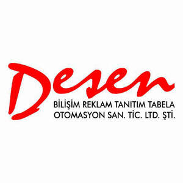

Trade Mark Journal No.2026/003 16 January 2026
UK00004284772 28 October 2025 (35)

- Class 35
- Advertising, marketing and public relations services; organisation of exhibitions and fairs for commercial and advertising purposes; design services for advertising purposes; provision of an online marketplace for buyers and sellers of goods and services; secretarial services; newspaper subscription arrangement services; compilation of statistics; rental of office machinery; systematization of information into computer databases; telephone answering services; Business management; administration and related consultancy; accounting consultancy services; personnel placement; recruitment; recruitment; personnel selection; personnel supply services; import-export agency services; temporary assignment of personnel; Services for organizing and conducting auctions; Wholesale and retail services connected with the sale of chemicals used in industry, science, photography, agriculture, horticulture and forestry so that customers can conveniently view and purchase goods, Fertilizers and soils, Unprocessed artificial resins and unprocessed plastics, Fire extinguishing agents, Adhesives except for stationery, medical and household use, Paints, varnishes, lacquers, rust inhibitors, wood preservatives, binders and thinning agents for paints; paint pigments; metal preservatives, shoe polishes, printing inks and inks, toners (including filled toner cartridges), substances for coloring foodstuffs, medicinal products and beverages, Untreated natural resins, Metal sheets and powdered metals for painters, decorators, printers and artists, Bleaching and cleaning agents, detergents, bleaches, fabric softeners, stain removers, dishwashing agents, Perfumery, cosmetics, fragrances for personal use (including deodorants for humans and animals; except cosmetics containing medicines), Soaps (except soaps containing pharmaceuticals), Dental care products, toothpastes, tooth polishing and whitening agents, non-medicated mouthwashes, Abrasive products, emery cloths, sandpaper, pumice stones, abrasive pastes, Polishing and care products for leather, vinyl, metal and wood, polishes, care creams, waxes for polishing; Industrial oils, greases, cutting fluids, dust absorbents, wetting and binding agents; Solid fuels, coals, wood; Liquid and gaseous fuels, gasoline, diesel, liquefied petroleum gas, natural gas, fuel oil and their non-chemical additives; Candles for lighting, wicks, semi-finished waxes, waxes, paraffins; Electric energy; Medicines for human and animal health, chemical products for medical and veterinary purposes, chemical radioactive substances for medical and veterinary purposes, drug-containing cosmetics; Dietetic substances suitable for medical and veterinary use; dietary supplements, food (nutritional) supplements for humans and animals; medical preparations for weight loss; baby food; medicinal plants and medicinal herbal beverages; Products for dentistry (excluding instruments/devices), dental filling materials, dental molding materials, denture and artificial tooth bonding and repair materials, Hygiene products, pads, tampons, medical moxibustion, dressings, diapers for children, adults and pets made of paper and textiles, Substances that destroy harmful insects, harmful plants, harmful fungi and rodents, Deodorants, air purifiers and deodorizers, except those for humans and animals, Disinfectants, antiseptics (germicides), medical detergents, medicated soaps, disinfecting soaps, antibacterial hand lotions, Non-precious mineral ores, Ordinary metals and their alloys and semi-finished products, rebar, common metal mesh and stirrups for construction, common metals in sheet, billet, bar, profile, plate, sheet, Materials and tools made of metal for sheltering, storing, preserving, covering, wrapping, enclosing, enclosing, storing, placing, structures made of metal, building frames and posts made of metal, metal boxes, metal packaging, aluminum foil, metal fences, railings, metal tubes, metal containers, metal warehouses, metal shipping crates, metal portable ladders, Materials made of metal for sieving, filtering and similar purposes, Doors and windows, shutters, blinds, frames and components made of metal, Metal cables, wires not for electricity, Hardware (hardware) articles of metal, screws, nails, bolts, nuts, pins, washers, metal pitons for climbers, chains, metal furniture fittings and wheels, industrial metal wheels, door and window handles, metal hinges, espagnolettes, metal locks, lock keys, metal key rings, metal rollers, Ventilation ducts, grilles, culverts, culvert covers, chimneys, chimney caps, manhole covers, gratings for ventilation, heating, sewerage, telephone, underground electrical and air conditioning installations made of metal, Materials made of metal for indication, orientation, indication, identification purposes, signs, boards, license plates, non-illuminated traffic direction signs made of metal, Pipes, drill pipes and fittings for the transportation of liquids or gases, made of metal, valves, sleeves, elbows, clips, extensions, of metal, Coin safes, Railway materials made of metal, rails, rail joints, turnouts, Metal pier bollards and buoys, metal pontoons, anchor anchors for marine vessels, Metal molds for casting (except for machine parts), Works of art made of base metals or their alloys, trophies given in competitions made of common metal, Caps made of metal, bottle caps, Mine poles, mine posts, mine scaffolds, mine scaffolds, mine piles, mine towers, Metal pallets for lifting, loading and transporting, metal ropes, metal slings, ties, columns, straps, belts, bands and strips for lifting and transporting loads, Metal chocks for vehicle wheels, Profile slats made of metal for vehicles (for decoration), Machines for processing and shaping wood, metal, glass and plastic materials and mines, machine tools and industrial robots used for this purpose, three-dimensional printers, Construction machinery, dozers, backhoes, excavators, road construction and paving machines, drilling machines, rock drilling machines, sweepers and robotic mechanisms with the same function, Lifting, transporting and conveying machines, elevators, escalators, cranes, robotic mechanisms with the same function, Machines and robotic mechanisms used in agriculture, animal husbandry, agricultural sectors and grain/fruit/vegetable/food processing, beverage making and processing machines, Engines, electric motors, their parts and assemblies, except those for land vehicles, hydraulic, pneumatic controls, brakes, pads, crankshafts, gears, cylinders, pistons, turbines, filters, except for land vehicles, parts used in land vehicles and included in this class, oil, fuel and air filters for vehicles, exhausts, exhaust manifolds, cylinders, cylinder heads, pistons, carburetors, fuel conversion devices, injectors, fuel saving devices, pumps, valves, starters, dynamos, spark plugs Bearings, ball or roller bearings, Tire dismounting and mounting machines, Alternators, generators, electric generators, solar-powered generators, Painting machines, automatic paint spray guns, electric, hydraulic and pneumatic punching machines and guns, electric adhesive guns, guns for compressed air or liquid spraying machines, electric hand drills, chainsaws, jigsaws, spiral machines, compressed air generators, compressors, car wash machines and robots with the same function as the above-mentioned machines and tools, Electric and gas welding machines, electric arc welding devices, electric soldering devices, electric arc cutting devices, electric welding machine electrodes and robots with the same function, Printing machines, Packaging machines, filling, sealing and capping machines, labeling machines, sorting machines and robots and robotic mechanisms with the same function as the above-mentioned machines (including electric plastic sealing/sealing devices [packaging]), Textile machines, sewing machines and industrial robots with the same function, Pumps that are not part of a machine or engine (including fuel filling and dispensing pumps and their guns), Kitchen electrical appliances for chopping, grinding, mashing, whisking and crushing, washing machines (including washing machines, non-heated centrifugal tumble dryers), electric machines for cleaning floors, carpets or upholstery, vacuum cleaners and parts thereof, Automatic vending machines, Galvanizing and electroplating machines, Electric opening and closing mechanisms, Cylinder seals for machines and engines, Forks, spoons, knives and non-electric cutting utensils for cutting, chopping and peeling, including those made of precious metals, Cutting and impulsive weapons, Tools included in this class used for beauty and personal care, shaving, epilation, manicure, pedicure tools, hand tools for hair straightening and curling, scissors, Hand tools (non-electric and non-motorized) for machinery, equipment and vehicle repair, construction, agriculture, horticulture and forestry, Electric and non-electric steam irons, Tool handles made of all kinds of materials, Measuring instruments and apparatus, including those for scientific, marine, topographical, meteorological, industrial and laboratory use, thermometers, barometers, ammeters, voltmeters, moisture meters, testers, telescopes, periscopes, compasses, not for medical purposes, vehicle indicators, materials used in laboratories, microscopes, magnifying glasses, binoculars, experimental materials and devices, Devices for the recording, transmission or reproduction of sound and image, cameras, still cameras, televisions, videos, cd-dvd recording and player devices, mp3 players, computers, desktop-tablet computers, wearable technological devices (smart watches, wristbands, head-mounted devices), microphones, speakers, headphones, communication and reproduction equipment and computer peripheral equipment, cellular telephones and their cases, landline telephones, telephone exchanges, computer printers, scanners, photocopiers, Magnetic, optical recording carriers and computer programs and software recorded on them, electronic publications that can be downloaded via computer networks and recorded on magnetic and optical media, cards with magnetic/optical readers, motion pictures, TV series and video music clips recorded on magnetic, optical and electronic media, Antennas, satellite antennas, amplifiers and their parts, Ticket vending machines, cash machines, Elements used in the electronics of machines and devices, semiconductors, electronic circuits, integrals, chips, diodes, transistors, magnetic heads, deflectors, electronic locks, photocells, electronic opening and closing mechanisms, sensors, Meters and timers that measure the amount of consumption per unit time, Protective clothing, protection and lifesaving equipment, Eyeglasses, sunglasses, lenses and their cases, cases, parts and accessories, Control devices and instruments for the transmission, conversion, storage and control of electrical energy, plugs, junction boxes, switches, switches, fuses, ballasts, starters, electrical panels, resistors, sockets, transformers, adapters, chargers, cables used in electricity, electronics, batteries, accumulators, solar panels for electric power generation, Devices whose main function is warning and alarm (except vehicle alarms), electric bells, Signaling, signaling devices and tools for use in traffic, Fire extinguishing appliances and devices, including vehicles for fire extinguishing purposes (including fire extinguishing hoses and fire extinguishing valves), Radars, submarine radars (sonars), instruments and devices for providing or enhancing night vision, Decorative magnets, Metronomes, Surgical, medical, dental and veterinary instruments, devices and furniture, Artificial organs and prostheses, Medical orthopedic materials, medical corsets, orthopedic shoes, elastic and supportive bandages, Operating room suits and sterile drapes, Instruments and materials for sexual purposes, Pre-condoms (condom/cap), Feeding bottles, bottle nipples, pacifiers, teether for babies, Bracelets and rings for medical purposes, anti-rheumatic bracelets and rings, Lighting devices (lighting fixtures for vehicles, indoors and outdoors), Solid, liquid, gas and electric heating appliances, combi boilers, boilers, heating boilers and honeycombs, heat exchangers, stoves, ranges, solar collectors, Steam, gas and smoke generators, steam generators (boilers), acetylene generators, oxygen generators, nitrogen generators, Air conditioning and ventilation equipment, Coolers and freezers, Electric and gas-powered appliances, machines and devices for cooking, drying and boiling, ovens, electric pots, electric kettles, electric water boilers, barbecues, barbecues, electric clothes dryers, hair dryers and hand dryers, Plumbing products, faucets, shower sets, toilet seat inserts, bath-shower cubicles, bathtubs, toilet bowls, sinks, washbasins, gaskets for faucets, salmas tras (faucet inserts), Water softening devices, water treatment devices, water treatment installations, waste treatment installations, Non-medical electric underpads and electric blankets, heating pads, electric or non-electric foot warmers, hot water bags (thermophores), electric heated socks, Filters and filter-motor combinations for aquariums, Industrial cooking, drying and cooling installations, Pasteurizing and sterilizing machines, Motor vehicles (including motorcycles, scooters) and their engines, clutches and transmission couplings, transmission belts and chains, gears, brakes, brake discs and pads, chassis, bodywork, suspensions, shock absorbers, transmissions, steering wheels, rims, Bicycles and their frames, handlebars, fenders, Vehicle bodies, tipper bodies, tractor trailers, refrigerated bodies, trailer hitches, Vehicle seats, head restraints for seats, child safety seats, seat covers, vehicle covers (shaped like the vehicle), sun visors, Arms for signals and direction indicators, wipers for vehicle windows, wiper arms, Inner and outer tubes for vehicles, tubles tires, tire repair kits, patches for vehicle tires, welding patches, valves for vehicle tires, Vehicle glass, safety vehicle glass, rear-view mirrors and side mirrors for vehicles, Skid chains, Roof racks for vehicles, bicycle and ski carriers, saddles, Tire inflator pumps, Burglar alarms, horns for vehicles, Seat belts, air cushions for passengers, Baby carriages, wheelchairs, strollers, Hand carts, market carts, single or multi-wheeled trolleys, market carts, wheeled carriers for household goods, Rail vehicles, Locomotives, trains, trams, wagons, cable cars, cable cars, chair lifts, Watercraft and parts (except engines), Aircraft and parts (except engines), Firearms, air, spring-loaded weapons and their holsters and suspension straps, Heavy weapons, mortars, rockets, Fireworks, Protective gases for personal use, Jewelry (including imitations), gold, jewelry, precious stones and jewelry made of them, cufflinks, tie pins and statues, trinkets, Watches and timekeeping instruments (including chronometers and parts, watch bands), Precious metal trophies awarded in competitions, Rosaries, Musical instruments and boxes Paper, cardboard (cardboard), packaging and wrapping materials made of paper or cardboard, cardboard boxes, one-time use products made of paper (except stationery), paper towels, toilet paper, paper napkins, Packaging and wrapping materials made of plastic materials, Printing and binding materials, Printed publications, printed documents, books, magazines, newspapers, invoices, delivery notes, income receipts, calendars, posters, photographs, banners, paintings, stickers, stamps, Stationery, office, educational, teaching, writing, drawing, painting and artists' supplies (excluding furniture and appliances), stationery paper products, adhesives, pencils, erasers, stationery tape, cardboard for handicrafts, writing paper, copy paper, cash register paper rolls, drawing instruments, blackboards, paints for painting, Office machines, Brushes and rollers for whitewashing and painting, Rubber, gutta-percha, rubber, amyant (asbestos), mica or semi-finished synthetic materials in powder, sheet, rod and foil form, Insulating, filling and sealing materials, paints used for insulation, fabrics for insulation, tapes for insulation, covers for insulation, joint sealants, gaskets, o-rings (except gaskets for engines, cylinder gaskets and taps), Bendable pipes, hoses (including those used for vehicles), pipe sleeves and fittings made of rubber, plastic or rubber, textile hoses, nonmetallic pipe sleeves and fittings, hose fittings, radiator hoses for vehicles (except fire hoses), Profile slats made of synthetic materials for vehicles (for decoration), Processed or unprocessed hides and skins, artificial skins, leather, leather for lining, Articles not included in other classes for transport purposes made of leather, imitation leather or other materials, bags, wallets, leather or leather leather boxes and trunks, key cases, suitcases, suitcases, Umbrellas, parasols, parasols, sunshades, canes, Whips, harnesses, saddles, stirrups and saddle straps, Unformed materials included in this class, sand, gravel, crushed stone, asphalt, tar, cement, lime, plaster, plaster, concrete, block marble, Concrete, plaster, earth, clay, clay, stone, marble, wood, plastic or synthetic materials for building/construction/road construction and similar purposes, non-metallic buildings/structures, structural elements, poles, barriers, natural or synthetic heat sealable coatings, tarred cardboard for roofs, tarred coatings, doors and windows of wood and synthetic materials, Metal, mechanical and non-illuminated traffic signs for roads, Monuments and sculptures made of concrete, stone or marble, Glass products for construction, Prefabricated swimming pools made of non-metal, Aquarium sand, Furniture, regardless of the materials from which it is made, Bed mattresses, pillows, non-medical air mattresses and pillows, sea beds (except sleeping bags for campers), Mirrors, Beehives, artificial honeycombs and honeycomb slats, Baby laps, playpens (for indoors), baby cribs, baby walkers, Boards made of wood or synthetic materials, pictures, frames for paintings, ID cards, dog tags, name tags, labels, Packaging made of wood or synthetic materials, barrels, drums, barrels, drums, containers (tanks) for transportation and storage, boxes, packaging containers, containers for transportation, crates, transport pallets, covers used with them, Hardware (hardware) made of wood or synthetic materials, furniture fittings, opening and closing devices, Ornamental and decorative articles made of wood, cork, reed, bamboo, wicker, horn, bone, ivory, whalebone, whalebone, oyster shell, amber, mother-of-pearl, meerschaum, wax, plastic or plaster included in this class, trinkets, wall hangings, statues and trophies given in competitions made of these materials, Baskets, fishing baskets, Kennels, nests, beds for pets, Portable ladders made of wood or synthetic materials, movable ladders, Bamboo curtains, roller blinds (interior), strip curtains, beaded curtains for decoration, curtain eyelets, curtain rings, curtain hooks, curtain rods, Non-metallic chocks for vehicle wheels, Non-electric cleaning tools and materials, brushes, except paint brushes, steel shavings, sponges, steel wool, toppings, textile cleaning and wiping cloths, dishwashing gloves, non-electric polishing machines, carpet sweepers, floor mops with sticks, Toothbrushes, electric toothbrushes, dental floss, shaving brushes, hairbrushes, combs, Household and kitchen utensils (excluding forks, knives, spoons), including those made of precious metals, included in this class and not electrically operated, dinner service sets, pots and pans, bottle openers, flower pots, straws, non-electric cooking utensils, Ironing boards and covers, clothes dryers, clothes hangers, Cages, aquariums, vivariums, terrariums for pets, Ornamental and decorative items made of glass, porcelain, ceramics, clay, statues, trinkets, vases and trophies for competitions made of these materials, Mousetraps, insect traps, electrical devices for repelling or destroying flies and insects, fly catchers, fly racquets, Perfume burners (burners that emit fragrance when lit), perfume sprays and vaporizers (sprayers), electric and non-electric makeup removers, powder puffs, boxes for toiletry items, Spray hose nozzles, nozzles for irrigation strainers, irrigation tools, garden irrigation strainers, nozzles for faucets, Unprocessed glass, semi-processed glass, glass mosaics and glass powders for decoration (except for construction), glass wool (not for insulation and textile purposes), Ropes, ropes, rope ladders, hammocks, fishing nets, Tents, awnings, tarpaulins, tarpaulins, sails, vehicle covers (not in the form of vehicles), Packaging bags made of textiles, Rubber and non-synthetic upholstery filling materials (including wool, cotton), Synthetic fibers for textile purposes, virgin spun fibers, glass fibers, Twisting yarns for textile purposes, sewing, embroidery and knitting threads, hyphens, flexible yarns, Woven or nonwoven fabrics, Home textiles, curtains, bedspreads, duvet covers, sheets, pillowcases, blankets, quilts, towels, Textile flags, pennants, labels, Swaddle covers for babies, Sleeping bags for campers, Footwear, shoes, slippers, sandals, Headwear, hats, caps, beanies, beanies, skullcaps, caps, Laces and embroidery (appliqués), guipures, scallops, narrow weaves, ribbons and ribbons, extraphores, wicks, ready-made letters and numerals made of fabric for garments, crests, rank insignia, padding, Buttons, clasps, eyelets, zippers, shoe and belt buckles, rivets, adhesive tapes, ties, pins, needles, sewing needles, sewing machine needles, crochets and knitting needles, needle boxes and pincushions for clothes, Made flowers, made fruits, Hairpins, rings for tying hair, tiaras, hair ornaments not made of precious metals, false hair, hairpieces, hairpins, electric or non-electric curlers, Carpets, rugs, runners, Prayer rugs, Linoleum, artificial grass, upholstery cork linoleum (linoleum), Cushions for sports, Non-textile wall coverings, wallpapers, Games and toys, Games played in the hall, instruments, machines and devices (including coin-operated) for games that can be connected and played with an external display or monitor, Toys for animals, Toys for playgrounds, parks and playgrounds, Gymnastic and sports equipment included in this class, fishing tackle, artificial fishing lures, traps for hunting and fishing, Artificial Christmas trees and decorations for them, artificial snow, rattles, materials for parties and similar entertainments, paper party hats, Meat, fish, poultry and game meat and all kinds of processed meat products, Dry pulses, Instant soups, bouillon, Olives, olive spreads, Milk of animal origin, plant-based milks, dairy products (including butter), Edible vegetable oils, Dried, canned, frozen, cooked, smoked, pickled fruits and vegetables, tomato paste, Dried nuts, Hazelnut and peanut butters, tahini, Eggs, egg powders, Potato chips, Coffee, cocoa, coffee or cocoa-based drinks, chocolate-based drinks, Pastas, ravioli, noodles, Pastry and bakery products, desserts, Bread, bagels, pastries, pita bread, sandwiches, katmer, pastry, pastry, fresh pastry, baklava, kadayif, desserts with syrup, pudding, custard, kazandibi, rice pudding, keskül, Honey, royal jelly, propolis, Condiments/flavorings for food, vanilla, spices, sauces including tomato sauces, Yeasts, baking powders, All kinds of flour, semolina, starches, Granulated sugar, caster sugar, powdered sugar, Teas, iced teas, Confectionery, chocolates, biscuits, crackers, wafers, Gummies, Ice creams, edible ice, Salt, Snacks made from cereals (grains), popcorn, oatmeal, corn chips, breakfast cereals, processed wheat, barley, oats, rye, rice, Molasses Unprocessed agricultural and horticultural products, seeds, Forestry products, Live animals (including hatching eggs, fertilized eggs), Live and dried plants and herbs, Animal feed, Malt (not for human consumption), Underlay materials for pets, cat litter, Beers, preparations used in brewing beer, Mineral waters, spring waters, table waters, sodas, Vegetable and fruit juices, their concentrates and extracts, soft drinks, Energy drinks (non-alcoholic), protein-enriched sports drinks, Alcoholic beverages (except beers), Wines, raki, whiskeys, liqueurs, cocktails containing alcohol, Tobacco, chewing tobacco, cigarettes, cigars, Tobacco smoking materials, including those made of precious metals, pipes, cigar and cigarette holders, ashtrays, tobacco boxes, tools for rolling cigarettes, cigarette papers, hookahs, flints, lighters, electronic cigarettes and their cartridges, Matches; Online retail and mail order services connected with the sale of chemicals used in industry, science, photography, agriculture, horticulture and forestry so that customers can conveniently view and purchase goods, Fertilizers and soils, Unprocessed artificial resins and unprocessed plastics, Fire extinguishing agents, Adhesives except for stationery, medical and household use, Paints, varnishes, lacquers, rust inhibitors, wood preservatives, binders and thinning agents for paints; paint pigments; metal preservatives, shoe polishes, printing inks and inks, toners (including filled toner cartridges), substances for coloring foodstuffs, medicinal products and beverages, Untreated natural resins, Metal sheets and powdered metals for painters, decorators, printers and artists, Bleaching and cleaning agents, detergents, bleaches, fabric softeners, stain removers, dishwashing agents, Perfumery, cosmetics, fragrances for personal use (including deodorants for humans and animals; except cosmetics containing medicines), Soaps (except soaps containing pharmaceuticals), Dental care products, toothpastes, tooth polishing and whitening agents, non-medicated mouthwashes, Abrasive products, emery cloths, sandpaper, pumice stones, abrasive pastes, Polishing and care products for leather, vinyl, metal and wood, polishes, care creams, waxes for polishing; Industrial oils, greases, cutting fluids, dust absorbents, wetting and binding agents; Solid fuels, coals, wood; Liquid and gaseous fuels, gasoline, diesel, liquefied petroleum gas, natural gas, fuel oil and their non-chemical additives; Candles for lighting, wicks, semi-finished waxes, waxes, paraffins; Electric energy; Medicines for human and animal health, chemical products for medical and veterinary purposes, chemical radioactive substances for medical and veterinary purposes, drug-containing cosmetics; Dietetic substances suitable for medical and veterinary use; dietary supplements, food (nutritional) supplements for humans and animals; medical preparations for weight loss; baby food; medicinal plants and medicinal herbal beverages; Products for dentistry (excluding instruments/devices), dental filling materials, dental molding materials, denture and artificial tooth bonding and repair materials, Hygiene products, pads, tampons, medical moxibustion, dressings, diapers for children, adults and pets made of paper and textiles, Substances that destroy harmful insects, harmful plants, harmful fungi and rodents, Deodorants, air purifiers and deodorizers, except those for humans and animals, Disinfectants, antiseptics (germicides), medical detergents, medicated soaps, disinfecting soaps, antibacterial hand lotions, Non-precious mineral ores, Ordinary metals and their alloys and semi-finished products, rebar, common metal mesh and stirrups for construction, common metals in sheet, billet, bar, profile, plate, sheet, Materials and tools made of metal for sheltering, storing, preserving, covering, wrapping, enclosing, enclosing, storing, placing, structures made of metal, building frames and posts made of metal, metal boxes, metal packaging, aluminum foil, metal fences, railings, metal tubes, metal containers, metal warehouses, metal shipping crates, metal portable ladders, Materials made of metal for sieving, filtering and similar purposes, Doors and windows, shutters, blinds, frames and components made of metal, Metal cables, wires not for electricity, Hardware (hardware) articles of metal, screws, nails, bolts, nuts, pins, washers, metal pitons for climbers, chains, metal furniture fittings and wheels, industrial metal wheels, door and window handles, metal hinges, espagnolettes, metal locks, lock keys, metal key rings, metal rollers, Ventilation ducts, grilles, culverts, culvert covers, chimneys, chimney caps, manhole covers, gratings for ventilation, heating, sewerage, telephone, underground electrical and air conditioning installations made of metal, Materials made of metal for indication, orientation, indication, identification purposes, signs, boards, license plates, non-illuminated traffic direction signs made of metal, Pipes, drill pipes and fittings for the transportation of liquids or gases, made of metal, valves, sleeves, elbows, clips, extensions, of metal, Coin safes, Railway materials made of metal, rails, rail joints, turnouts, Metal pier bollards and buoys, metal pontoons, anchor anchors for marine vessels, Metal molds for casting (except for machine parts), Works of art made of base metals or their alloys, trophies given in competitions made of common metal, Caps made of metal, bottle caps, Mine poles, mine posts, mine scaffolds, mine scaffolds, mine piles, mine towers, Metal pallets for lifting, loading and transporting, metal ropes, metal slings, ties, columns, straps, belts, bands and strips for lifting and transporting loads, Metal chocks for vehicle wheels, Profile slats made of metal for vehicles (for decoration), Machines for processing and shaping wood, metal, glass and plastic materials and mines, machine tools and industrial robots used for this purpose, three-dimensional printers, Construction machinery, dozers, backhoes, excavators, road construction and paving machines, drilling machines, rock drilling machines, sweepers and robotic mechanisms with the same function, Lifting, transporting and conveying machines, elevators, escalators, cranes, robotic mechanisms with the same function, Machines and robotic mechanisms used in agriculture, animal husbandry, agricultural sectors and grain/fruit/vegetable/food processing, beverage making and processing machines, Engines, electric motors, their parts and assemblies, except those for land vehicles, hydraulic, pneumatic controls, brakes, pads, crankshafts, gears, cylinders, pistons, turbines, filters, except for land vehicles, parts used in land vehicles and included in this class, oil, fuel and air filters for vehicles, exhausts, exhaust manifolds, cylinders, cylinder heads, pistons, carburetors, fuel conversion devices, injectors, fuel saving devices, pumps, valves, starters, dynamos, spark plugs Bearings, ball or roller bearings, Tire dismounting and mounting machines, Alternators, generators, electric generators, solar-powered generators, Painting machines, automatic paint spray guns, electric, hydraulic and pneumatic punching machines and guns, electric adhesive guns, guns for compressed air or liquid spraying machines, electric hand drills, chainsaws, jigsaws, spiral machines, compressed air generators, compressors, car wash machines and robots with the same function as the above-mentioned machines and tools, Electric and gas welding machines, electric arc welding devices, electric soldering devices, electric arc cutting devices, electric welding machine electrodes and robots with the same function, Printing machines, Packaging machines, filling, sealing and capping machines, labeling machines, sorting machines and robots and robotic mechanisms with the same function as the above-mentioned machines (including electric plastic sealing/sealing devices [packaging]), Textile machines, sewing machines and industrial robots with the same function, Pumps that are not part of a machine or engine (including fuel filling and dispensing pumps and their guns), Kitchen electrical appliances for chopping, grinding, mashing, whisking and crushing, washing machines (including washing machines, non-heated centrifugal tumble dryers), electric machines for cleaning floors, carpets or upholstery, vacuum cleaners and parts thereof, Automatic vending machines, Galvanizing and electroplating machines, Electric opening and closing mechanisms, Cylinder seals for machines and engines, Forks, spoons, knives and non-electric cutting utensils for cutting, chopping and peeling, including those made of precious metals, Cutting and impulsive weapons, Tools included in this class used for beauty and personal care, shaving, epilation, manicure, pedicure tools, hand tools for hair straightening and curling, scissors, Hand tools (non-electric and non-motorized) for machinery, equipment and vehicle repair, construction, agriculture, horticulture and forestry, Electric and non-electric steam irons, Tool handles made of all kinds of materials, Measuring instruments and apparatus, including those for scientific, marine, topographical, meteorological, industrial and laboratory use, thermometers, barometers, ammeters, voltmeters, moisture meters, testers, telescopes, periscopes, compasses, not for medical purposes, vehicle indicators, materials used in laboratories, microscopes, magnifying glasses, binoculars, experimental materials and devices, Devices for the recording, transmission or reproduction of sound and image, cameras, still cameras, televisions, videos, cd-dvd recording and player devices, mp3 players, computers, desktop-tablet computers, wearable technological devices (smart watches, wristbands, head-mounted devices), microphones, speakers, headphones, communication and reproduction equipment and computer peripheral equipment, cellular telephones and their cases, landline telephones, telephone exchanges, computer printers, scanners, photocopiers, Magnetic, optical recording carriers and computer programs and software recorded on them, electronic publications that can be downloaded via computer networks and recorded on magnetic and optical media, cards with magnetic/optical readers, motion pictures, TV series and video music clips recorded on magnetic, optical and electronic media, Antennas, satellite antennas, amplifiers and their parts, Ticket vending machines, cash machines, Elements used in the electronics of machines and devices, semiconductors, electronic circuits, integrals, chips, diodes, transistors, magnetic heads, deflectors, electronic locks, photocells, electronic opening and closing mechanisms, sensors, Meters and timers that measure the amount of consumption per unit time, Protective clothing, protection and lifesaving equipment, Eyeglasses, sunglasses, lenses and their cases, cases, parts and accessories, Control devices and instruments for the transmission, conversion, storage and control of electrical energy, plugs, junction boxes, switches, switches, fuses, ballasts, starters, electrical panels, resistors, sockets, transformers, adapters, chargers, cables used in electricity, electronics, batteries, accumulators, solar panels for electric power generation, Devices whose main function is warning and alarm (except vehicle alarms), electric bells, Signaling, signaling devices and tools for use in traffic, Fire extinguishing appliances and devices, including vehicles for fire extinguishing purposes (including fire extinguishing hoses and fire extinguishing valves), Radars, submarine radars (sonars), instruments and devices for providing or enhancing night vision, Decorative magnets, Metronomes, Surgical, medical, dental and veterinary instruments, devices and furniture, Artificial organs and prostheses, Medical orthopedic materials, medical corsets, orthopedic shoes, elastic and supportive bandages, Operating room suits and sterile drapes, Instruments and materials for sexual purposes, Pre-condoms (condom/cap), Feeding bottles, bottle nipples, pacifiers, teether for babies, Bracelets and rings for medical purposes, anti-rheumatic bracelets and rings, Lighting devices (lighting fixtures for vehicles, indoors and outdoors), Solid, liquid, gas and electric heating appliances, combi boilers, boilers, heating boilers and honeycombs, heat exchangers, stoves, ranges, solar collectors, Steam, gas and smoke generators, steam generators (boilers), acetylene generators, oxygen generators, nitrogen generators, Air conditioning and ventilation equipment, Coolers and freezers, Electric and gas-powered appliances, machines and devices for cooking, drying and boiling, ovens, electric pots, electric kettles, electric water boilers, barbecues, barbecues, electric clothes dryers, hair dryers and hand dryers, Plumbing products, faucets, shower sets, toilet seat inserts, bath-shower cubicles, bathtubs, toilet bowls, sinks, washbasins, gaskets for faucets, salmas tras (faucet inserts), Water softening devices, water treatment devices, water treatment installations, waste treatment installations, Non-medical electric underpads and electric blankets, heating pads, electric or non-electric foot warmers, hot water bags (thermophores), electric heated socks, Filters and filter-motor combinations for aquariums, Industrial cooking, drying and cooling installations, Pasteurizing and sterilizing machines, Motor vehicles (including motorcycles, scooters) and their engines, clutches and transmission couplings, transmission belts and chains, gears, brakes, brake discs and pads, chassis, bodywork, suspensions, shock absorbers, transmissions, steering wheels, rims, Bicycles and their frames, handlebars, fenders, Vehicle bodies, tipper bodies, tractor trailers, refrigerated bodies, trailer hitches, Vehicle seats, head restraints for seats, child safety seats, seat covers, vehicle covers (shaped like the vehicle), sun visors, Arms for signals and direction indicators, wipers for vehicle windows, wiper arms, Inner and outer tubes for vehicles, tubles tires, tire repair kits, patches for vehicle tires, welding patches, valves for vehicle tires, Vehicle glass, safety vehicle glass, rear-view mirrors and side mirrors for vehicles, Skid chains, Roof racks for vehicles, bicycle and ski carriers, saddles, Tire inflator pumps, Burglar alarms, horns for vehicles, Seat belts, air cushions for passengers, Baby carriages, wheelchairs, strollers, Hand carts, market carts, single or multi-wheeled trolleys, market carts, wheeled carriers for household goods, Rail vehicles, Locomotives, trains, trams, wagons, cable cars, cable cars, chair lifts, Watercraft and parts (except engines), Aircraft and parts (except engines), Firearms, air, spring-loaded weapons and their holsters and suspension straps, Heavy weapons, mortars, rockets, Fireworks, Protective gases for personal use, Jewelry (including imitations), gold, jewelry, precious stones and jewelry made of them, cufflinks, tie pins and statues, trinkets, Watches and timekeeping instruments (including chronometers and parts, watch bands), Precious metal trophies awarded in competitions, Rosaries, Musical instruments and boxes Paper, cardboard (cardboard), packaging and wrapping materials made of paper or cardboard, cardboard boxes, one-time use products made of paper (except stationery), paper towels, toilet paper, paper napkins, Packaging and wrapping materials made of plastic materials, Printing and binding materials, Printed publications, printed documents, books, magazines, newspapers, invoices, delivery notes, income receipts, calendars, posters, photographs, banners, paintings, stickers, stamps, Stationery, office, educational, teaching, writing, drawing, painting and artists' supplies (excluding furniture and appliances), stationery paper products, adhesives, pencils, erasers, stationery tape, cardboard for handicrafts, writing paper, copy paper, cash register paper rolls, drawing instruments, blackboards, paints for painting, Office machines, Brushes and rollers for whitewashing and painting, Rubber, gutta-percha, rubber, amyant (asbestos), mica or semi-finished synthetic materials in powder, sheet, rod and foil form, Insulating, filling and sealing materials, paints used for insulation, fabrics for insulation, tapes for insulation, covers for insulation, joint sealants, gaskets, o-rings (except gaskets for engines, cylinder gaskets and taps), Bendable pipes, hoses (including those used for vehicles), pipe sleeves and fittings made of rubber, plastic or rubber, textile hoses, nonmetallic pipe sleeves and fittings, hose fittings, radiator hoses for vehicles (except fire hoses), Profile slats made of synthetic materials for vehicles (for decoration), Processed or unprocessed hides and skins, artificial skins, leather, leather for lining, Articles not included in other classes for transport purposes made of leather, imitation leather or other materials, bags, wallets, leather or leather leather boxes and trunks, key cases, suitcases, suitcases, Umbrellas, parasols, parasols, sunshades, canes, Whips, harnesses, saddles, stirrups and saddle straps, Unformed materials included in this class, sand, gravel, crushed stone, asphalt, tar, cement, lime, plaster, plaster, concrete, block marble, Concrete, plaster, earth, clay, clay, stone, marble, wood, plastic or synthetic materials for building/construction/road construction and similar purposes, non-metallic buildings/structures, structural elements, poles, barriers, natural or synthetic heat sealable coatings, tarred cardboard for roofs, tarred coatings, doors and windows of wood and synthetic materials, Metal, mechanical and non-illuminated traffic signs for roads, Monuments and sculptures made of concrete, stone or marble, Glass products for construction, Prefabricated swimming pools made of non-metal, Aquarium sand, Furniture, regardless of the materials from which it is made, Bed mattresses, pillows, non-medical air mattresses and pillows, sea beds (except sleeping bags for campers), Mirrors, Beehives, artificial honeycombs and honeycomb slats, Baby laps, playpens (for indoors), baby cribs, baby walkers, Boards made of wood or synthetic materials, pictures, frames for paintings, ID cards, dog tags, name tags, labels, Packaging made of wood or synthetic materials, barrels, drums, barrels, drums, containers (tanks) for transportation and storage, boxes, packaging containers, containers for transportation, crates, transport pallets, covers used with them, Hardware (hardware) made of wood or synthetic materials, furniture fittings, opening and closing devices, Ornamental and decorative articles made of wood, cork, reed, bamboo, wicker, horn, bone, ivory, whalebone, whalebone, oyster shell, amber, mother-of-pearl, meerschaum, wax, plastic or plaster included in this class, trinkets, wall hangings, statues and trophies given in competitions made of these materials, Baskets, fishing baskets, Kennels, nests, beds for pets, Portable ladders made of wood or synthetic materials, movable ladders, Bamboo curtains, roller blinds (interior), strip curtains, beaded curtains for decoration, curtain eyelets, curtain rings, curtain hooks, curtain rods, Non-metallic chocks for vehicle wheels, Non-electric cleaning tools and materials, brushes, except paint brushes, steel shavings, sponges, steel wool, toppings, textile cleaning and wiping cloths, dishwashing gloves, non-electric polishing machines, carpet sweepers, floor mops with sticks, Toothbrushes, electric toothbrushes, dental floss, shaving brushes, hairbrushes, combs, Household and kitchen utensils (excluding forks, knives, spoons), including those made of precious metals, included in this class and not electrically operated, dinner service sets, pots and pans, bottle openers, flower pots, straws, non-electric cooking utensils, Ironing boards and covers, clothes dryers, clothes hangers, Cages, aquariums, vivariums, terrariums for pets, Ornamental and decorative items made of glass, porcelain, ceramics, clay, statues, trinkets, vases and trophies for competitions made of these materials, Mousetraps, insect traps, electrical devices for repelling or destroying flies and insects, fly catchers, fly racquets, Perfume burners (burners that emit fragrance when lit), perfume sprays and vaporizers (sprayers), electric and non-electric makeup removers, powder puffs, boxes for toiletry items, Spray hose nozzles, nozzles for irrigation strainers, irrigation tools, garden irrigation strainers, nozzles for faucets, Unprocessed glass, semi-processed glass, glass mosaics and glass powders for decoration (except for construction), glass wool (not for insulation and textile purposes), Ropes, ropes, rope ladders, hammocks, fishing nets, Tents, awnings, tarpaulins, tarpaulins, sails, vehicle covers (not in the form of vehicles), Packaging bags made of textiles, Rubber and non-synthetic upholstery filling materials (including wool, cotton), Synthetic fibers for textile purposes, virgin spun fibers, glass fibers, Twisting yarns for textile purposes, sewing, embroidery and knitting threads, hyphens, flexible yarns, Woven or nonwoven fabrics, Home textiles, curtains, bedspreads, duvet covers, sheets, pillowcases, blankets, quilts, towels, Textile flags, pennants, labels, Swaddle covers for babies, Sleeping bags for campers, Footwear, shoes, slippers, sandals, Headwear, hats, caps, beanies, beanies, skullcaps, caps, Laces and embroidery (appliqués), guipures, scallops, narrow weaves, ribbons and ribbons, extraphores, wicks, ready-made letters and numerals made of fabric for garments, crests, rank insignia, padding, Buttons, clasps, eyelets, zippers, shoe and belt buckles, rivets, adhesive tapes, ties, pins, needles, sewing needles, sewing machine needles, crochets and knitting needles, needle boxes and pincushions for clothes, Made flowers, made fruits, Hairpins, rings for tying hair, tiaras, hair ornaments not made of precious metals, false hair, hairpieces, hairpins, electric or non-electric curlers, Carpets, rugs, runners, Prayer rugs, Linoleum, artificial grass, upholstery cork linoleum (linoleum), Cushions for sports, Non-textile wall coverings, wallpapers, Games and toys, Games played in the hall, instruments, machines and devices (including coin-operated) for games that can be connected and played with an external display or monitor, Toys for animals, Toys for playgrounds, parks and playgrounds, Gymnastic and sports equipment included in this class, fishing tackle, artificial fishing lures, traps for hunting and fishing, Artificial Christmas trees and decorations for them, artificial snow, rattles, materials for parties and similar entertainments, paper party hats, Meat, fish, poultry and game meat and all kinds of processed meat products, Dry pulses, Instant soups, bouillon, Olives, olive spreads, Milk of animal origin, plant-based milks, dairy products (including butter), Edible vegetable oils, Dried, canned, frozen, cooked, smoked, pickled fruits and vegetables, tomato paste, Dried nuts, Hazelnut and peanut butters, tahini, Eggs, egg powders, Potato chips, Coffee, cocoa, coffee or cocoa-based drinks, chocolate-based drinks, Pastas, ravioli, noodles, Pastry and bakery products, desserts, Bread, bagels, pastries, pita bread, sandwiches, katmer, pastry, pastry, fresh pastry, baklava, kadayif, desserts with syrup, pudding, custard, kazandibi, rice pudding, keskül, Honey, royal jelly, propolis, Condiments/flavorings for food, vanilla, spices, sauces including tomato sauces, Yeasts, baking powders, All kinds of flour, semolina, starches, Granulated sugar, caster sugar, powdered sugar, Teas, iced teas, Confectionery, chocolates, biscuits, crackers, wafers, Gummies, Ice creams, edible ice, Salt, Snacks made from cereals (grains), popcorn, oatmeal, corn chips, breakfast cereals, processed wheat, barley, oats, rye, rice, Molasses Unprocessed agricultural and horticultural products, seeds, Forestry products, Live animals (including hatching eggs, fertilized eggs), Live and dried plants and herbs, Animal feed, Malt (not for human consumption), Underlay materials for pets, cat litter, Beers, preparations used in brewing beer, Mineral waters, spring waters, table waters, sodas, Vegetable and fruit juices, their concentrates and extracts, soft drinks, Energy drinks (non-alcoholic), protein-enriched sports drinks, Alcoholic beverages (except beers), Wines, raki, whiskeys, liqueurs, cocktails containing alcohol, Tobacco, chewing tobacco, cigarettes, cigars, Tobacco smoking materials, including those made of precious metals, pipes, cigar and cigarette holders, ashtrays, tobacco boxes, tools for rolling cigarettes, cigarette papers, hookahs, flints, lighters, electronic cigarettes and their cartridges, matches.
DESEN BİLİŞİM REKLAM TANITIM TABELA OTOMASYON SANAYİ TİCARET LİMİTED ŞİRKETİ
Representative: Zeynel Güney